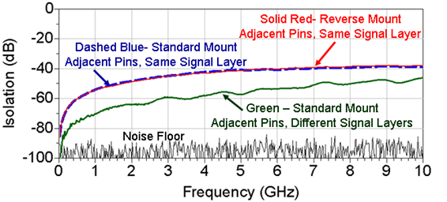
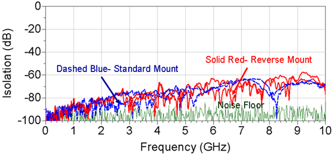

Isolation between multiport mini-coax connector pins
The isolation between multiport mini-coax connector pins depends on two factors:
- the location (that is the distance) of the ports relative to each other, and
- whether the same or a different layer is used for the two traces routed to each port.
General layout guideline:
To avoid crosstalk, separate signal traces by five times (5x) the trace width.
Isolation between adjacent pins
With 5x trace width applied:

The comparison of isolation measurements shows, that Surface Mounting (also called Standard Mounting) has about the same isolation performance as the Through Board Mounting (also called Reverse Mounting). The performance can be improved, if the traces from the two adjacent connectors are routed away on two different signal layers of the board, for example first layer and third layer.
Isolation between two far end pins
With 5x trace width applied:

The comparison of isolation measurements shows, that increasing the distance between two interfering signals improves isolation significantly with every step.
Both in Surface Mounting (also called Standard Mounting) and in Through Board Mounting (also called Reverse Mounting), the isolation is best between traces assigned to connectors in the most distant locations.
Functional changes
- Introduced in SmarTest 6.5.3